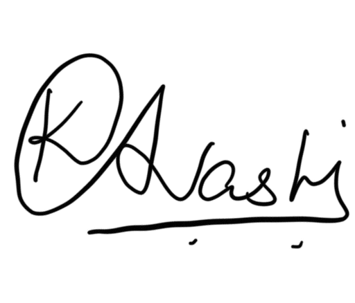

ABOUT ME
ENGINEER TODAY. PRODUCT LEADER TOMORROW.
I am currently pursuing M.Tech in ICT (Software Systems) at Dhirubhai Ambani University. My experience spans backend development, machine learning research, satellite data analytics, and academic mentoring. Alongside my technical foundation, I am actively exploring Product Management, where I can combine technology, business understanding, and user-centric thinking to build impactful products.
SKILLS
- Java
- SQL
- REST API Development
- Spring Boot (Basics)
- PostgreSQL
- MySQL
- Git
- Postman
- Machine Learning
- Python
- Pandas
- Time-Series Analysis
EXPERIENCE
Research Intern
Space Applications Centre (ISRO)Developed machine learning models for Sea Surface Height prediction using satellite altimetric data. Performed preprocessing, visualization and oceanic pattern analysis supporting Earth observation research.
Teaching Assistant
Dhirubhai Ambani UniversityAssisted faculty in Computer Networks and Deep Learning laboratory sessions. Evaluated assignments and mentored students to strengthen coding and conceptual understanding.
Senior Management Position
Malgadi DDULed operations, marketing and team coordination for a student-led startup. Managed execution, customer satisfaction and cross-functional collaboration.
Event Coordinator
StartupExpo • Business Club - DAU & DCEICoordinated StartupExpo at Dhirubhai Ambani University, bringing together 20+ startups and 8 venture capitalists. Managed event execution, cross-functional coordination, and logistics while facilitating networking between founders, investors, and attendees.
SELECTED PROJECTS
Extended Indoor Localization using NavIC Data
Analyzed NavIC satellite availability and signal degradation across indoor and outdoor environments. Developed machine-learning based localization models using smartphone sensor data and anomaly detection.
Research PaperSubscription Organization
Built a Django-based subscription management platform with automated reminders and a REST-powered movie recommendation system using genre similarity.
VIEW PROJECTAltimetric Application of CYGNSS Data
Evaluated CYGNSS satellite data for Sea Surface Height prediction using machine learning techniques and correlation-based analysis to improve sea-level forecasting.
VIEW PROJECTPrivacy-Preserving Face Generation
Proposed a novel multi-target identity fusion framework for privacy-preserving face generation using diffusion models. Reduced identity leakage while preserving image quality, achieving a Protection Success Rate (PSR) of 1.00 at FAR@0.01.
VIEW PROJECTFood Ordering System - SOLID Principles
Designed and implemented a Food Ordering System in Java to compare Bad Design and Good Design using all five SOLID principles. Created UML class diagrams to visualize the architectural improvements and demonstrate how SOLID enables a modular, maintainable, and extensible system.
EDUCATION
M.Tech ICT (Software Systems)
Dhirubhai Ambani University
CPI: 8.94B.Tech Computer Engineering
Dharmsinh Desai University
CPI: 8.68GATE 2025 Qualified
Graduate Aptitude Test in Engineering
Score: 569CURRICULUM VITAE
RESEARCHING.
BUILDING.
LEARNING.
Download my latest resume containing software engineering, product management and machine learning experience.

CONTACT